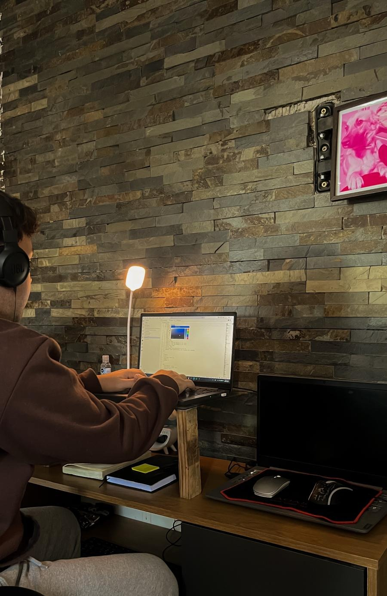

Cómo nació
NTEC nació al ver que muchos negocios tenían buen producto, pero una presencia digital que no transmitía su valor.
.png)
Ayudar a negocios reales a crecer en digital con transparencia, cercanía y resultados medibles.
Soy Nathaniel, creador de NTEC. Estoy construyendo este proyecto para ayudar a emprendedores y negocios a dar una imagen digital profesional, clara y confiable desde el primer día.

No soy una gran empresa, soy alguien que quiere compartir sus conocimientos contigo. Creo sitios web que se ven profesionales y, sobre todo, generan resultados reales. Mi compromiso es brindarte un servicio transparente y confiable, con una estrategia digital clara para que tu negocio crezca.
NTEC nació al ver que muchos negocios tenían buen producto, pero una presencia digital que no transmitía su valor.
Diseño cada proyecto con foco en conversión, claridad y experiencia real del cliente, no solo estética.
Con comunicación simple y directa: te explico cada etapa, por qué se hace y cómo impacta en tu negocio.
Que tu web no sea una tarjeta digital, sino una herramienta que atraiga clientes y genere crecimiento sostenible.
Sabés qué se hace, cuándo se hace y por qué.
No sos un número: construimos juntos una solución adaptada a tu negocio.
Todo apunta a más consultas, más ventas y mejor posicionamiento de marca.
Si te gusta esta forma de trabajo, el próximo paso es muy simple: hablamos de tu caso y te propongo una estrategia clara.